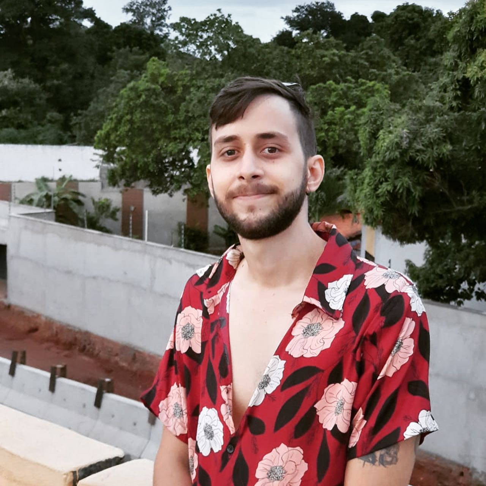

Francisco Lucas Oliveira Alves

A felicidade no olhar de quem bateu
a meta de pedalar 30km
Sou naturalizado em Juazeiro do Norte,
cidade onde atualmente resido e concluí a graduação
em Engenharia Civil pela UNIFAP no estado do Ceará
Linkedin
GitHub
Habilidades
- Esforçado
- Empatia
- Compromisso
- Excelência
- Resiliência
Experiências
- Atuação na Engenharia Civil
- Proprietário da ATX Construtora
- Futuro Desenvolvedor WEB